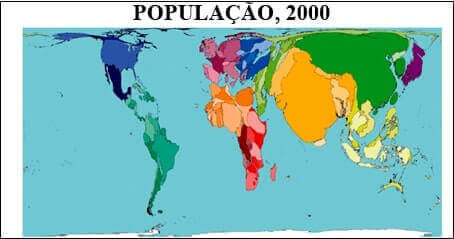
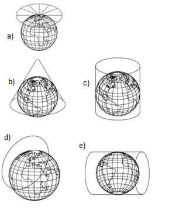
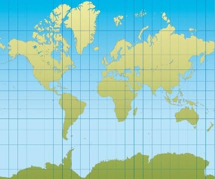
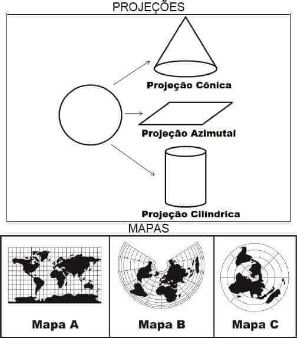
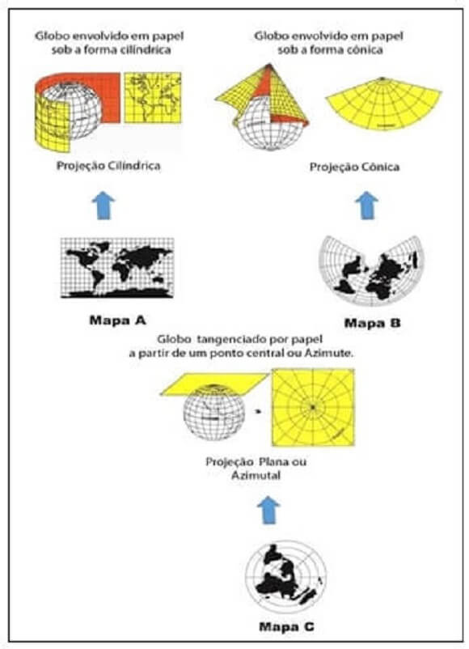
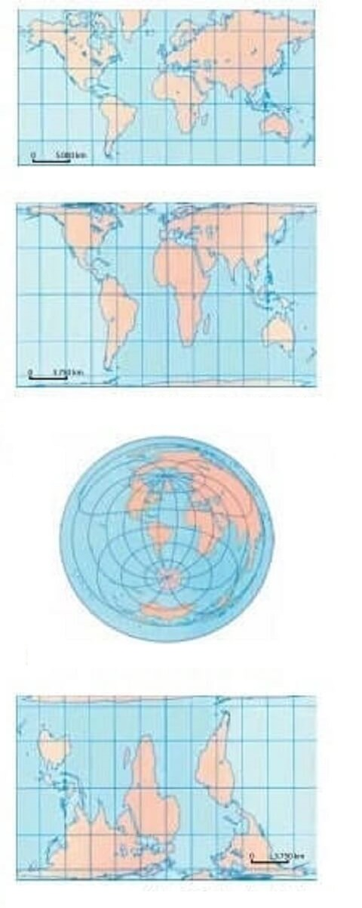
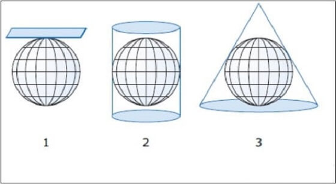
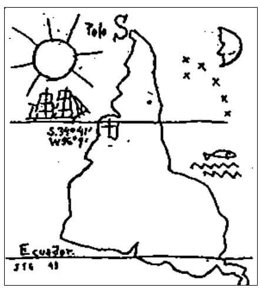
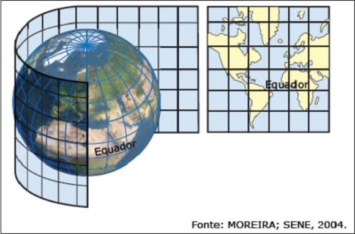
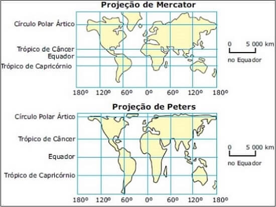

Conteúdo: Projeções cilíndricas, cônicas e azimutais
Objetivo: Comparar os diferentes sistemas de projeções cartográficas
Questão 01
(UESC) Os conhecimentos sobre projeções cartográficas e uso de mapas possibilitam afirmar:
a) A projeção azimutal fornece uma visão eurocêntrica do mundo e, por isso, ela não é mais utilizada.
b) As distorções da representação, nas projeções cilíndricas, são maiores no Equador e menores nos polos.
c) A projeção de Peters é a única que não pretende privilegiar nenhum continente, porque ela reproduz rigorosamente a realidade.
d) A projeção cônica só pode ser utilizada para representar grandes regiões, porque as distorções são pequenas entre os trópicos, não representando, portanto, a realidade das áreas mapeadas.
e) As projeções cartográficas permitem que, na construção dos mapas temáticos, os meridianos e os paralelos terrestres sejam transformados de uma realidade tridimensional para uma realidade bidimensional.
Comentário:
a) Incorreta – a projeção azimutal não pode ser considerada do tipo eurocêntrica, porque uma de suas características é a de apresentar menores distorções no centro selecionado na representação, que pode ser qualquer ponto da Terra.
b) Incorreta – nas projeções cilíndricas, a exemplo da Projeção de Mercator, as distorções são maiores nos polos do que no Equador.
c) Incorreta – toda projeção cartográfica apresenta distorções. As distorções na Projeção de Peters estão, principalmente, nas formas dos continentes, que aparentam estar mais “esticados”.
d) Incorreta – as áreas representadas na projeção cônica costumam ser menos distorcidas nos paralelos centrais e mais distorcidas nas zonas periféricas do mapa. Sendo assim, seu uso é aconselhável em pequenas regiões ou, no máximo, em algumas áreas continentais.
e) Correta – as projeções consistem justamente na transposição de algo tridimensional em algo bidimensional.
Questão 02
(Uni-FaceF-SP 2017) Observe um exemplo de produto cartográfico.

(Www.worldmapper.org)
É correto afirmar que a técnica utilizada no cartograma tem como objetivo
a) demonstrar a dinâmica e a velocidade de transformação dos dados.
b) oferecer a percepção imediata da proporção do fenômeno e do lugar onde ele ocorre
c) questionar o senso comum que diminui a importância dos países subdesenvolvidos nas representações cartográficas
d) proporcionar uma dificuldade analítica ao leitor acerca da orientação espacial dos dados
e) valorizar a expressão subjetiva do cartógrafo ao romper com os diferentes tipos de projeções
Questão 03
(ENEM 2016)
A ONU faz referência a uma projeção cartográfica em seu logotipo. A figura que ilustra o modelo dessa projeção é:

Assinale a alternativa que corresponde a figura acima:
a) Letra A
b) Letra A
c) Letra C
d) Letra D
e) Letra E
O símbolo da ONU – Organização das Nações Unidas é uma representação baseada na projeção azimutal do globo, no qual o plano tangencia o globo no polo. Resposta A.
Questão 04

A projeção cartográfica do mapa configura-se como hegemônica desde a sua elaboração, no século XVI. A sua principal contribuição inovadora foi a.
a) redução comparativa das terras setentrionais.
b) manutenção da proporção real das áreas representadas
c) consolidação das técnicas utilizadas nas cartas medievais.
d) valorização dos continentes recém-descobertos pelas Grandes Navegações.
e) adoção de um plano em que os paralelos fazem ângulos constantes com os meridianos.
Trata-se da projeção cilíndrica de Mercator, que mantém corretas as formas dos continentes, porém distorce suas áreas, principalmente nas regiões de maiores latitudes.
a) Incorreta. Ocorre o contrário, o aumento das terras situadas ao norte ou setentrionais.
b) Incorreta. Ás áreas sofrem distorções (aumentam de tamanho), embora a seja uma projeção conforme, isto é, a forma permanece proporcional (o traçado dos continentes).
c) Incorreta. Mercator rompeu e corrigiu que utilizavam mapas com técnicas medievais inspirados em mundo religioso com ensinamentos bíblicos.
d) Incorreta. A projeção de Mercator é conhecida por possuir um caráter eurocêntrico. Sua elaboração aconteceu em um momento em que as expansões marítimas europeias estavam em seu clímax, mas não para valorizar as terras descobertas e sim para explorá-las.
e) Correta. O mérito desta projeção foi o de dividir o planeta em 24 meridianos e 12 paralelos (os mesmos elaborados para estabelecer os fusos horários), igualmente espaçados e distribuídos sobre a camada terrestre.
Questão 05
(Unicamp 2015)

A representação de uma esfera num plano estabelece um desafio técnico resolvido a partir de distintas formas de projeção, cada uma delas adequada a um objetivo. Faça a correspondência entre cada um dos mapas e sua correta projeção.
a) A, cônica; B, azimutal; C, cilíndrica.
b) A, cilíndrica; B, cônica; C, azimutal.
c) A, azimutal; B, cilíndrica; C, cônica.
d) A, cilíndrica; B, azimutal; C, cônica.
Os mapas cônicos possuem paralelos e meridianos com variações angulares entre si, tendo meridianos radiais a partir dos polos e paralelos concêntricos porém vistos no mapa parcialmente. Por sua vez os mapas azimutais são projeções que possuem tangentes ou secantes determinadas a partir de um centro azimutal (ponto central), nestes mapas os meridianos são plenamente visíveis e cruzam-se nos polos enquanto os paralelos são visivelmente concêntricos.
Vejamos:

A partir do esquema explicativo acima temos: Mapa A – Cilíndrico; Mapa B – Cônico; Mapa C – Azimutal; Resposta correta alternativa (b) A, cilíndrica; B, cônica; C, azimutal.
Questão 06
(Unesp 2015) Analise as diferentes projeções cartográficas.

Considerando conhecimentos geográficos sobre projeções cartográficas, é correto afirmar que elas
a) respeitam os mesmos graus de proporcionalidade, conformidade, equidistância e orientação, regras e convenções que garantem rigor na representação do planeta.
b) podem ser admitidas como representações fiéis da realidade, pois expressam de forma precisa e rigorosa o planeta como ele é.
c) trazem consigo diferentes formas de representação do planeta, buscando difundir ideologias e determinadas visões de mundo.
d) se caracterizam pela objetividade e neutralidade, sem que fatores de ordem política, técnica ou cultural tenham influência sobre as formas de representação do planeta
e) são relações métricas entre a superfície do planeta e as áreas representadas no mapa, não apresentando distorções e deformações em relação à realidade.
a) Incorreta: As imagens apresentam projeções distintas, que contêm parâmetros cartográficos próprios (orientação, conformidade, proporcionalidade, equidistância), a fim de representar a superfície terrestre segundo interesses de quem as elaborou.
b) Incorreta: Toda projeção cartográfica é uma representação parcial da realidade, pois determinados aspectos - como forma e tamanho – podem ser priorizados em detrimento a outros. Dessa forma, é impossível representar “de forma precisa e rigorosa o planeta como ele é”.
c) Correta: As projeções cartográficas auxiliam na transposição de elementos tridimensionais da superfície terrestre para um plano bidimensional (mapa). No entanto, as transformações decorrentes desse processo distorcem parte da realidade, segundo determinadas preferências e elementos que se pretendem destacar por quem elaborou o mapa, gerando “visões de mundo” distintas, como se pode observar nas projeções demonstradas.
d) Incorreta: Considerando o conteúdo ideológico que a utilização de diferentes projeções cartográficas pressupõe, não há como afirmar que as representações mostradas possuem neutralidade do ponto de vista político e cultural. Além disso, elas são afetadas também por fatores de ordem técnica.
e) Incorreta: Embora contenham relações métricas entre a superfície real e as áreas representadas a partir da escala, as projeções contêm distorções e deformações, como exemplificado nas imagens 1 (Projeção de Mercator) que distorce as áreas e preserva as formas e 2 (Projeção de Peters) que distorce as formas e preserva as áreas.
Questão 07
(UEMG 2010) Analise as informações e as ilustrações seguintes:
“A transferência de uma imagem da superfície curva da esfera terrestre para o plano da carta sempre produz deformações, isoladas ou conjuntas, de várias naturezas: na forma, em área, em distâncias e em ângulo. As projeções cartográficas foram desenvolvidas para tentar oferecer uma solução conveniente para essas dicotomias”

BOCHICCHIO,Vincenzo Raffaele. Atlas Mundo Atual. Ed. Atual. 2003.
Considere os conceitos, a seguir, que relacionam as informações do texto com as ilustrações 1, 2 e 3, acima. Depois, assinale a alternativa que aponta a sequência correta dessa relação.
() os meridianos convergem para os polos e os paralelos são arcos concêntricos situados a igual distância uns dos outros.
() a projeção deforma as superfícies nas altas latitudes, mantendo as baixas latitudes em forma e dimensão mais próximas do real.
() a construção se organiza em volta de um ponto central chamado “centro de projeção”.
Está CORRETA a relação sequencial indicada em:
a) 1 – 2 – 3
b) 2 – 3 – 1
c) 3 – 1 – 2
d) 3 – 2 – 1
e) 2 – 1 - 3
Questão 08
(ENEM 2009)

TORRES-GARCÍA, J. Universalismo construtivo. Buenos Aires: Poseidón, 1941. (Com adaptações).
O desenho do artista uruguaio Joaquin Torres-García trabalha com uma representação diferente da usual da América Latina. Em artigo publicado em 1941, em que apresenta a imagem e trata do assunto, Joaquin afirma:
"Quem e com que interesse dita o que é o norte e o sul? Defendo a chamada Escola do Sul por que na realidade, nosso Norte é o Sul. Não deve haver norte, senão em oposição ao nosso sul. Por isso colocamos o mapa ao revés, desde já, e então teremos a justa ideia de nossa posição, e não como querem no resto do mundo. A ponta da América assinala insistentemente o sul, nosso norte"
O referido autor, no texto e imagem acima,
a) privilegiou a visão dos colonizadores da América
b) questionou as noções eurocêntricas sobre o mundo.
c) resgatou a imagem da América como centro do mundo.
d) defendeu a Doutrina Monroe expressa no lema "América para os americanos".
e) propôs que o sul fosse chamado de norte e vice-versa.
Trata-se de questão que envolve a compreensão de texto nas variadas linguagens. Torres-Garcia questiona, em sua representação “ao revés”, o modelo de representação cartográfica da Terra, utilizado desde o século XVI. Nesta, privilegia-se a visão eurocêntrica, ou seja, a Europa ocupa a porção superior e central do mapa.
a) Incorreta. A cartografia dos colonizadores reproduziam sua visão a partir da Europa (eurocêntrica).
b) Correta. Ao inverter a posição usual do mapa da América Latina, o autor chama atenção para a possibilidade de diferentes visões de mundo, não somente a hegemônica (que domina as demais).
c) Incorreta. O autor busca chamar à atenção para a posição atual da América no mundo e não para resgatar nenhuma posição do passado, que aliás, foi denominado de “Novo Mundo” pelos europeus.
d) Incorreta. A Doutrina Monroe surgiu nos Estados Unidos, em meados do século XIX, como uma resposta à suposta ameaça das nações europeias de invadir e recolonizar o continente americano. O lema dessa doutrina era “América para os americanos” e, nela, os Estados Unidos posicionavam-se como o guardião da integridade territorial do continente, e não como propunha uma visão alternativa da cartografia sul-americana.
e) Incorreta. Não se trata somente de denominar de sul ou de norte de forma literal. O autor busca, dentre outras coisas, a valorização da cultura dos povos da América e sua verdadeira posição no mundo.
Questão 09
(Unimontes-MG–2008) A partir da projeção dos meridianos e paralelos geográficos, a forma cartográfica representada na figura é construída em:

a) um cilindro tangente à superfície de referência, desenvolvendo, a seguir, o cilindro num plano.
b) uma esfera tangente à superfície de referência, desenvolvendo, a seguir, o globo num plano.
c) um cone tangente à superfície de referência, desenvolvendo, a seguir, o cone num plano.
d) qualquer ponto da superfície de referência por um pedaço de papel num plano.
Questão 10
(UFES) As figuras a seguir mostram o mundo representado em projeções cartográficas diferentes.

Analisadas as figuras acima, é CORRETO afirmar que:
a) ambas as projeções são cilíndricas, sendo que a de Mercator é equivalente e a de Peters é conforme.
b) a projeção de Mercator conserva as áreas dos continentes e, por esse motivo, é chamada de eurocêntrica.
c) a projeção de Mercator é conforme, ou seja, conserva as formas dos continentes e é a mais adequada para a navegação marítima.
d) a projeção de Peters é a mais adequada para a representação dos países do Terceiro Mundo, pois mantém as formas em proporção correta.
e) a projeção de Peters é equidistante, ou seja, mantém a proporcionalidade real nas medidas de distâncias e ângulos.